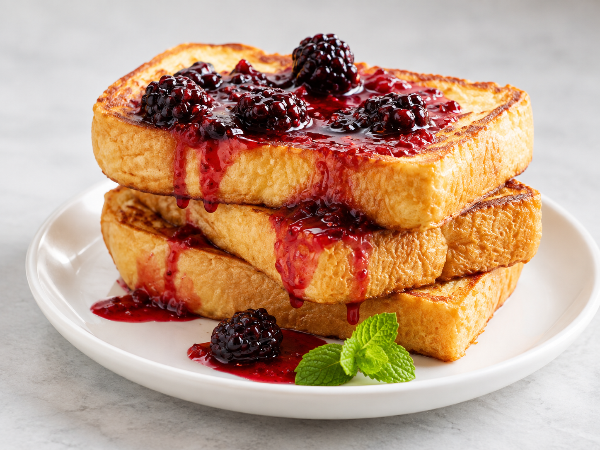

Receta Pan Francés
En esta página te explicaremos cómo hacer pan francés en tu casa.

Esta receta rinde hasta para nueve rebanadas de pan.
Ingredientes:
- 1 taza de leche.
- 2 huevos.
- 1 cucharada de vainilla.
- Aceite.
- Pan de barra.
Pasos:
- En un tazón, añadir la leche, los huevos y la vainilla.
- Mezclar los ingredientes.
- Calentar un sartén con aceite.
- Remojar el pan en la mezcla.
- Freír el pan por ambos lados en el sartén.
- Agregar azúcar o mermelada al gusto.